Eclipse创建Servlet项目
通过前面的学习，我们了解了如何在 Tomcat 目录下手动部署 Servlet，这种方式不但效率低下，而且容易出错。因此，在实际开发中，一般使用 IDE（集成开发环境）进行开发。
下面以 Eclipse 为例，演示如何快速创建 Servlet。
2）在弹出的对话框中，填写项目名称，例如：servletDemo。 点击 New Runtime 新建一个运行时环境（Target runtime）。
3）选择本地安装的 Tomcat 版本，勾选 Creat a new local servlet 创建新的本地服务器，点击 Next。
4）选择 Tomcat 服务器的名称和安装目录，并指定 JRE 配置，最后点击 Finish，返回创建 Web 工程的对话框。
5）勾选 Generate web.xml deployment descriptor 生成 web.xml 文件，点击 Finish。
自此，就完成了一个动态 Web 项目的创建，如下图所示。
2）填写 Servlet 的包名和类名，点击 Next 进行下一步。
3）保持默认选项，点击 Next。
4）根据需要勾选继承的方法，然后点击 Finish。
5）返回首页，可以看到 Eclipse 已经完成了 MyServlet 的创建，我们稍作修改，代码如下所示。
2）在弹出的对话框中选择一个 Tomcat 服务器，点击 Next 下一步。

3）选择要运行的项目，点击 Finish 完成。
4）Tomcat 启动完成后，在地址栏输入“http://localhost:8080/servletDemo/MyServlet”，访问 MyServlet，结果如下图 。
下面以 Eclipse 为例，演示如何快速创建 Servlet。
1. 创建动态 Web 项目
1）打开 Eclipse，单击左上角菜单：File -> New-> Dynamic Web Project。
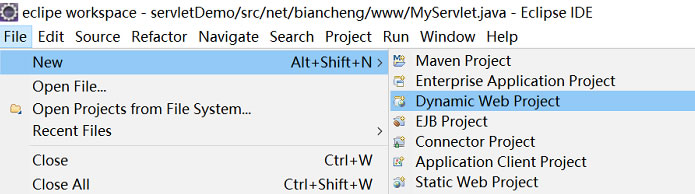
2）在弹出的对话框中，填写项目名称，例如：servletDemo。 点击 New Runtime 新建一个运行时环境（Target runtime）。
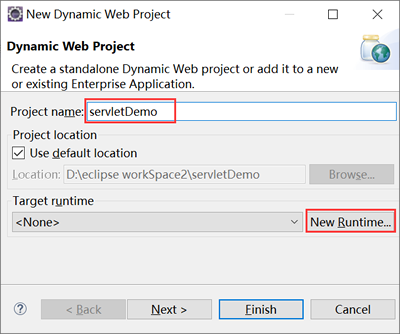
3）选择本地安装的 Tomcat 版本，勾选 Creat a new local servlet 创建新的本地服务器，点击 Next。
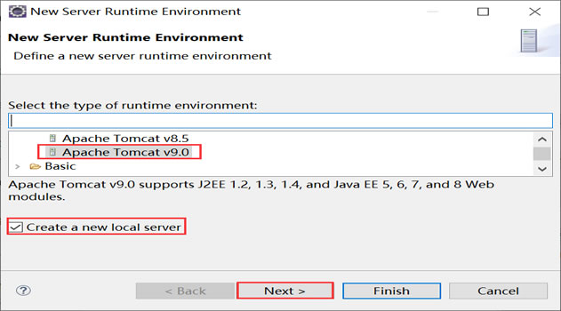
4）选择 Tomcat 服务器的名称和安装目录，并指定 JRE 配置，最后点击 Finish，返回创建 Web 工程的对话框。
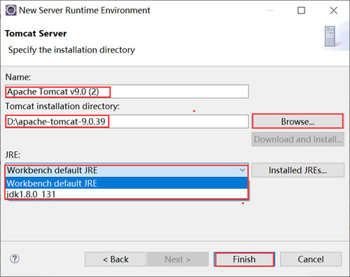
5）勾选 Generate web.xml deployment descriptor 生成 web.xml 文件，点击 Finish。
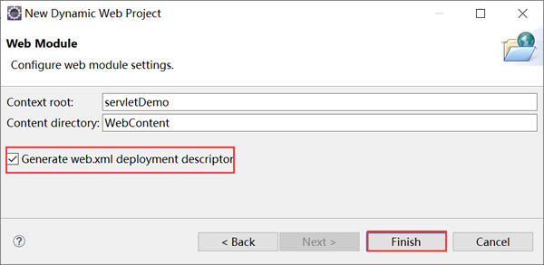
自此，就完成了一个动态 Web 项目的创建，如下图所示。
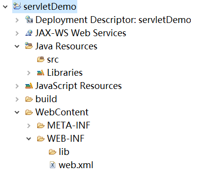
2. 使用 Eclipse 创建 Servlet
1）鼠标右击项目名称或 src，选择：New -> Servlet ，如下图所示。
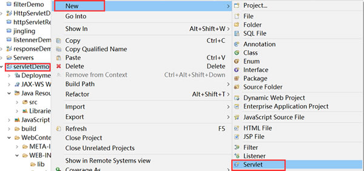
2）填写 Servlet 的包名和类名，点击 Next 进行下一步。
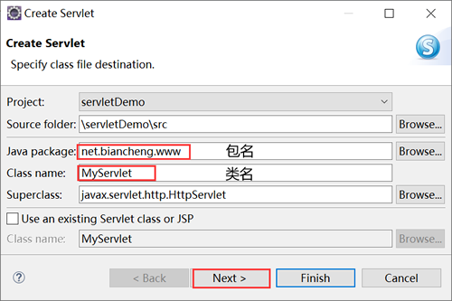
3）保持默认选项，点击 Next。
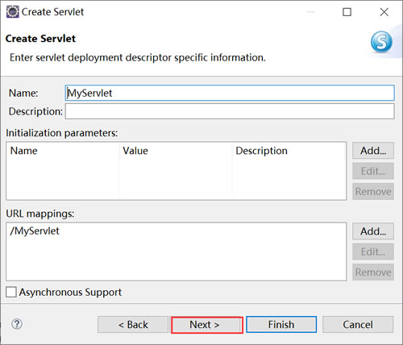
4）根据需要勾选继承的方法，然后点击 Finish。
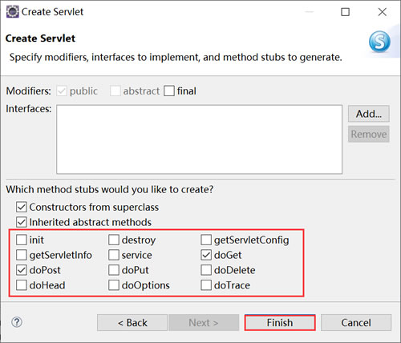
5）返回首页，可以看到 Eclipse 已经完成了 MyServlet 的创建，我们稍作修改，代码如下所示。
package net.biancheng.www;
import java.io.IOException;
import java.io.PrintWriter;
import javax.servlet.ServletException;
import javax.servlet.http.HttpServlet;
import javax.servlet.http.HttpServletRequest;
import javax.servlet.http.HttpServletResponse;
/**
*
* @author 编程帮 www.biancheng.net
*
*/
public class MyServlet extends HttpServlet {
private static final long serialVersionUID = 1L;
protected void doGet(HttpServletRequest request, HttpServletResponse response)
throws ServletException, IOException {
// 设置响应给页面的格式、字符集
response.setContentType("text/html;charset=UTF-8");
PrintWriter writer = response.getWriter();
writer.write("C语言中文网，c.biancheng.net");
writer.close();
}
protected void doPost(HttpServletRequest request, HttpServletResponse response)
throws ServletException, IOException {
doGet(request, response);
}
}
3. 配置 web.xml
对 web.xml 文件进行配置，代码如下。
<?xml version="1.0" encoding="UTF-8"?>
<web-app xmlns:xsi="http://www.w3.org/2001/XMLSchema-instance"
xmlns="http://xmlns.jcp.org/xml/ns/javaee"
xsi:schemaLocation="http://xmlns.jcp.org/xml/ns/javaee http://xmlns.jcp.org/xml/ns/javaee/web-app_4_0.xsd"
id="WebApp_ID" version="4.0">
<display-name>servletDemo</display-name>
<servlet>
<servlet-name>MyServlet</servlet-name>
<servlet-class>net.biancheng.www.MyServlet</servlet-class>
</servlet>
<servlet-mapping>
<servlet-name>MyServlet</servlet-name>
<url-pattern>/MyServlet</url-pattern>
</servlet-mapping>
</web-app>
4. 部署项目并启动服务器
1）鼠标右击项目名，选择 Run As -> Run on Server。
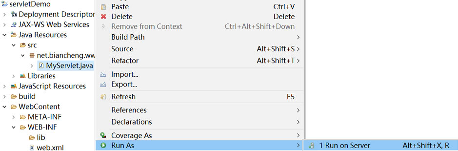
2）在弹出的对话框中选择一个 Tomcat 服务器，点击 Next 下一步。
3）选择要运行的项目，点击 Finish 完成。
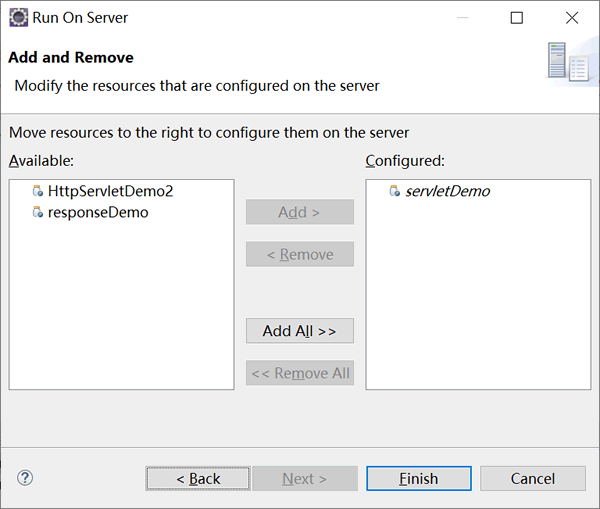
4）Tomcat 启动完成后，在地址栏输入“http://localhost:8080/servletDemo/MyServlet”，访问 MyServlet，结果如下图 。
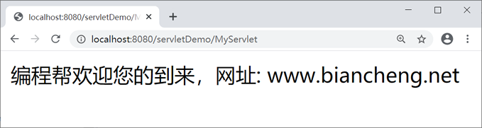
关注公众号「站长严长生」，在手机上阅读所有教程，随时随地都能学习。内含一款搜索神器，免费下载全网书籍和视频。

微信扫码关注公众号